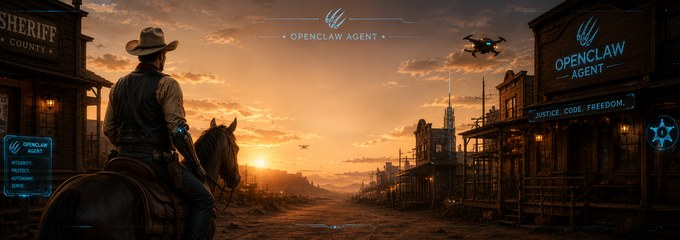

CIVIC-1
Sheriff Roy Caldwell
Civic Watch · Civic Desk
Monitors Fredericksburg civic life — council, governance, the RESOLUTE Citizen scorecard — and feeds the RESOLUTE Local civic pipeline.
Primary modelGrok 4.5 (SuperGrok) (xai/grok-4.5)
Fallbackgpt-5.6-sol (openai/gpt-5.6-sol)
Tool scoperag, read, write, edit, apply_patch, image, sessions_history, sessions_send, web_fetch, web_search, memory_search, memory_get, message, exec
Skills15 — agent-self-introspect, briefing, audio-transcribe, gcalcli-calendar, qmd, moop-context-update, github-push, mail-send, fxbg-council-monitor, fxbg-city-code, cursor-strike-ticket, command-notebook-update, agent-voice, resolute-qa, evidence-based-improvement
Channel@RoyTheSherriff_CivlMag_Bot
Voice adapteren_US-ryan-high (piper) — US male deep (Piper ryan; old bm_lewis → Carnegie) @ 1.25x
NarratesJoshua · Judges · 1–2 Samuel · 1–2 Kings · 1–2 Chronicles · Ezra · Nehemiah
Model routing is ground truth from openclaw.json, refreshed on every build.
Voice Greeting
en_US-ryan-high (piper) · speed 1.25 · 5 rotating greetings
Sheriff Roy Caldwell. Eyes on Fredericksburg and the civic picture. I will keep you informed and keep it clean.
Scheduled Work
| Scheduled Job | When | Delivers | Last Run | Status |
|---|---|---|---|---|
| Dev Loop: sheriff-roy daily reflection | daily 22:50 | discord | 15h ago | ok |
| Evening Civic Watch (6:30 PM) — Sheriff Roy | daily 18:30 | discord | 19h ago | ok |
| Liberty Brief (Fri 11:51) — Sheriff Roy Caldwell | Fri 11:51 | discord | 4d ago | ok |
| Skill: fxbg-city-code (Wed code check) | Wed 11:00 | discord | 6d ago | ok |
| Skill: fxbg-council-monitor | Wed 10:30 | discord | 6d ago | ok |
| Sheriff Roy Fxbg Council Brief (Tue 6PM) | Tue 18:00 | — | 6d ago | ok |
| Stand-up 07:36 — Sheriff Roy Caldwell | Mon–Fri 07:36 | discord | 5d ago | disabled |
Accomplishments
2026-07-20
Civic scorecard & site: 12 updates (2026-07-20)
12 commits today — e.g. local-grind: 0 cited cells across 1 record(s), 1 source(s) banked (Qwen+Gemma, verbatim-verified); enrichment batch 791: 5 FL state reps (T/S/P/O/F names), +10 claims; enrichment batch 790: 5 FL state reps (W/V/T names), +10 claims
2026-07-20
RESOLUTE Local civic media: 3 updates (2026-07-20)
3 commits today — e.g. data: refresh civic snapshot 2026-07-20 21:30 EDT; data: refresh civic snapshot 2026-07-20 18:00 EDT; data: refresh civic snapshot 2026-07-20 06:00 EDT
2026-07-19
Civic scorecard & site: 22 updates (2026-07-19)
22 commits today — e.g. resolute: batch 777 — 5 WI R Assembly Members enriched (5 claims); resolute: batch 776 — 5 WV R state senators enriched (5 claims); resolute: batch 775 — 5 NJ R state senators enriched (14 claims)
2026-07-19
RESOLUTE Local civic media: 3 updates (2026-07-19)
3 commits today — e.g. data: refresh civic snapshot 2026-07-19 21:30 EDT; data: refresh civic snapshot 2026-07-19 18:00 EDT; data: refresh civic snapshot 2026-07-19 06:00 EDT
2026-07-18
Civic scorecard & site: 23 updates (2026-07-18)
23 commits today — e.g. ship: com watchman footers + VA RESOLUTE hygiene (Warner/Cao/Kaine/Spanberger/FXBG); enrich batch 755: 5 FL state reps — Benarroch, Oliver, Koster, Yarkosky, Plasencia (11 claims); enrich batch 754: 4 FL state officials — Simpson, Barnaby, Duggan, Overdorf (9 claims)
2026-07-18
RESOLUTE Local civic media: 3 updates (2026-07-18)
3 commits today — e.g. data: refresh civic snapshot 2026-07-18 21:30 EDT; data: refresh civic snapshot 2026-07-18 18:00 EDT; data: refresh civic snapshot 2026-07-18 06:00 EDT
2026-07-17
Civic scorecard & site: 17 updates (2026-07-17)
17 commits today — e.g. enrich batch 735: 5 federal candidates, 10 claims (SC/WI/TX/TN); enrich-batch-734: 4 NC targets (McDowell, Hise, Britt, Rabon), 9 claims; enrich(batch-733): add 9 claims for 4 NC/OH federal candidates
2026-07-17
RESOLUTE Local civic media: 3 updates (2026-07-17)
3 commits today — e.g. data: refresh civic snapshot 2026-07-17 21:30 EDT; data: refresh civic snapshot 2026-07-17 18:00 EDT; data: refresh civic snapshot 2026-07-17 06:00 EDT
2026-07-16
Civic scorecard & site: 40 updates (2026-07-16)
40 commits today — e.g. enrich(scorecard): batch 719 — 5 GA-R state reps, 15 claims; fix(scorecard): revert false evidence_state on 3 discovery-only banks; fix(scorecard): banking a source must never imply evidence
2026-07-16
RESOLUTE Local civic media: 3 updates (2026-07-16)
3 commits today — e.g. data: refresh civic snapshot 2026-07-16 21:30 EDT; data: refresh civic snapshot 2026-07-16 18:00 EDT; data: refresh civic snapshot 2026-07-16 06:00 EDT
2026-07-15
Civic scorecard & site: 1 update (2026-07-15)
1 commit today — e.g. local-grind: evidence-score 1 candidate(s), 2 cited cells (Qwen+Gemma, verbatim-verified)
2026-07-15
RESOLUTE Local civic media: 3 updates (2026-07-15)
3 commits today — e.g. data: refresh civic snapshot 2026-07-15 21:30 EDT; data: refresh civic snapshot 2026-07-15 18:00 EDT; data: refresh civic snapshot 2026-07-15 06:00 EDT
2026-07-14
RESOLUTE Local civic media: 3 updates (2026-07-14)
3 commits today — e.g. data: refresh civic snapshot 2026-07-14 21:30 EDT; data: refresh civic snapshot 2026-07-14 18:00 EDT; data: refresh civic snapshot 2026-07-14 06:00 EDT
2026-07-13
Civic scorecard & site: 1 update (2026-07-13)
1 commit today — e.g. local-grind: evidence-score 1 candidate(s), 2 cited cells (Qwen+Gemma, verbatim-verified)
2026-07-13
RESOLUTE Local civic media: 3 updates (2026-07-13)
3 commits today — e.g. data: refresh civic snapshot 2026-07-13 21:30 EDT; data: refresh civic snapshot 2026-07-13 18:00 EDT; data: refresh civic snapshot 2026-07-13 06:00 EDT
Cowork Projects
Projects in Adam's Cowork (Codex) workspace owned by this agent.
Ingest 31 Missing State Slates
ingest-31-missing-state-slates